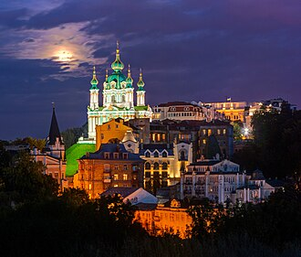
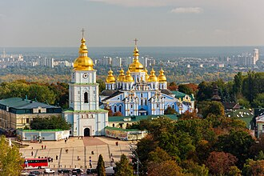

Historical and reference coats of arms


Kyiv
Guide. Places in this edition: 34.
OTIUM is the practice of deliberate leisure. In the classical sense, otium is not escape from work but time when attention returns to memory, landscape, and thought — without a utilitarian deadline.
We shape routes for lingering, not for checklist tourism. The goal is presence in a place rather than consumption of sights.
OTIUM is not a tour operator. It is an invitation to walk, pause, and leave a route unfinished if the light on a façade deserves another minute.
Historical and reference coats of arms
Guide. Places in this edition: 34.
Kyiv is the capital of Ukraine and one of Eastern Europe’s oldest continuously inhabited cities, set on the Dnieper hills.
As a centre of Kyivan Rus, later Polish-Lithuanian, imperial, Soviet, and independent eras, it combines monastic cliffs, boulevards, and modern quarters. Its history is inseparable from the wider region’s faith, trade, and statecraft.
Kyiv endured the Mongol sack, Polish-Lithuanian rule, imperial administration, and the Soviet era as Ukraine’s capital. Independence from 1991 and events after 2014 reframed its political role as a European capital on the Dnieper.

Andriyivsky Descent is a overview in Kyiv. Photo tags: kiev, ukraine, city, travels. Reference image context: https://pixabay.com/photos/kiev-ukraine-city-travels-5202546/.
Public photo archives associate this site with: kiev, ukraine, city, travels. Worth a stop when exploring Kyiv.

Andriyivskyy Descent is a overview in Kyiv.

Ar-Rahma is a places of worship in Kyiv. Photo tags: kiev, ukraine, to travel, landmark. Reference image context: https://pixabay.com/photos/kiev-ukraine-to-travel-landmark-3795060/. Public photo archives associate this site with: kiev, ukraine, to travel, landmark.

Bessarabsky Market is a markets in Kyiv. Photo tags: market, produce, farmer's market, shopping. Reference image context: https://pixabay.com/photos/market-produce-farmers-market-7094635/. Public photo archives associate this site with: market, produce, farmer's market, shopping.

Contract House is a landmarks in Kyiv. Photo tags: real estate, homeownership, homebuying, home. Reference image context: https://pixabay.com/photos/real-estate-homeownership-homebuying-6688945/. Public photo archives associate this site with: real estate, homeownership, homebuying, home.

Glass Bridge Kyiv is a bridges in Kyiv.

Golden Gate — museum in Kyiv, Ukraine.
Golden Gate is a landmarks in Kyiv. Photo tags: san francisco, nature, golden gate bridge, sunset. Reference image context: https://pixabay.com/photos/san-francisco-golden-gate-bridge-7008147/. Public photo archives associate this site with: san francisco, nature, golden gate bridge, sunset.

Great Lavra Bell Tower is a landmarks in Kyiv. Photo tags: big ben, london, clock tower, uk. Reference image context: https://pixabay.com/photos/big-ben-london-clock-tower-uk-4728199/. Public photo archives associate this site with: big ben, london, clock tower, uk.

The House with Chimaeras is a distinctive architectural landmark located on Khreshchatyk Street, Kiev's main boulevard. Its unique design features chimeras—mythical creatures combining elements of different animals—in intricate reliefs adorning the facade. It is situated at the intersection of Khreshchatyk and Istomina Streets. The chimeras are believed to symbolize strength, courage, and wisdom. The building was renovated extensively in the late 1980s and early 1990s. Today, it houses various cultural venues including a theater and exhibition spaces. Its design has inspired numerous artists and photographers.
Built in 1903 by architect Ivan Fryazinov, the house originally served as a bank and later became a cultural center. The chimeras were added to the facade during its renovation in the early 20th century, making it one of Kiev’s most iconic buildings. Visitors come to admire the exquisite artistry of the chimeras and the harmonious blend of traditional Ukrainian architecture with Art Nouveau influences.

Set amidst Kiev's rolling hills and verdant landscapes, Hryshko National Botanical Garden is a serene oasis of flora and fauna. Established to preserve biodiversity and educate the public on plant life, it showcases over 8,000 species of plants from around the world. The garden spans approximately 60 hectares of land. It houses more than 8,000 plant species, including many rare and exotic varieties. Visitors can explore diverse habitats such as tropical rainforests, deserts, and alpine meadows. Regular educational programs and exhibitions provide insight into horticulture and environmental science. Hryshko hosts numerous cultural events throughout the year, including flower festivals and botanical conferences.
Founded in 1974 by botanist Nikolay Hryshko, the garden was originally known as the Kiev Botanical Garden. It later expanded into its current national status, becoming one of Ukraine’s most significant botanical institutions. The garden features unique collections of rare and endangered plants, making it a vital hub for conservation efforts. A must-visit for nature lovers and students of botany, Hryshko offers stunning displays of flowers, trees, and shrubs, all meticulously arranged within themed gardens.

Maidan Nezalezhnosti — main square of Kyiv, Ukraine.

Kyiv is a landmarks in Kyiv.

It was declared a UNESCO World Heritage Site in 1990. The Lavra includes several churches, monasteries, and underground catacombs. Visitors can explore the historic Caves Monastery and Cathedral of the Dormition. Notable figures buried here include national heroes and religious leaders. Annual festivals celebrate the Lavra's cultural significance.
A must-visit for anyone interested in Ukrainian culture and religion, the Lavra offers breathtaking views of the Dniepr River and provides a glimpse into the country's rich historical and spiritual legacy.

Mariinsky Palace is a palaces in Kyiv. Photo tags: dome, stairs, mexico city, architecture. Reference image context: https://pixabay.com/photos/dome-stairs-mexico-city-5818580/. Public photo archives associate this site with: dome, stairs, mexico city, architecture.

Mariinsky Park is a parks in Kyiv. Photo tags: park, pavilion, lake, nature. Reference image context: https://pixabay.com/photos/park-pavilion-lake-bridge-pergola-5598455/. Public photo archives associate this site with: park, pavilion, lake, nature.

Mosque engraving is a places of worship in Kyiv. Photo tags: heart, tree, engraving, love. Reference image context: https://pixabay.com/photos/heart-tree-engraving-love-nature-8173525/. Public photo archives associate this site with: heart, tree, engraving, love.

Motherland Monument is a landmarks in Kyiv. Photo tags: monument, homeland, russia, volgograd. Reference image context: https://pixabay.com/photos/monument-homeland-russia-volgograd-5127638/. Public photo archives associate this site with: monument, homeland, russia, volgograd.

Located on Vulytsia Hrechaniwka, Mystetskyi Arsenal is a renowned museum and cultural center showcasing Ukrainian art and historical artifacts. It was originally built as a military arsenal during the late 19th century. The museum houses one of the largest collections of Ukrainian avant-garde art. It organizes regular temporary exhibits showcasing contemporary artists. Exhibits often include multimedia installations and interactive displays. The grounds feature outdoor sculptures and gardens. Mystetskyi Arsenal offers guided tours and educational programs.
Established in 1898 as a munitions depot for the Imperial Russian Army, Mystetskyi Arsenal later transformed into a cultural institution after Ukraine's independence in 1991. The building's neoclassical architecture reflects its origins as a functional structure designed to store weapons and ammunition. Visitors can explore exhibitions featuring modern and traditional Ukrainian art, as well as artifacts that highlight Kiev’s rich historical heritage.

The National Art Museum of Ukraine is Kiev's premier institution for showcasing the country's rich artistic heritage and global influence. Established in 1898 as a private collection, it later became one of Europe’s most significant art repositories. It houses more than 400,000 exhibits, showcasing a vast array of Ukrainian art. The museum features permanent exhibitions dedicated to various periods of Ukrainian art history. Notable collections include works by famous Ukrainian painters like Taras Shevchenko and Vasyl Kopp. Regular temporary exhibitions highlight contemporary Ukrainian art and international collaborations. Located on Khreshchatyk Street, the museum attracts thousands of visitors annually.
Founded in 1898 by Ukrainian philanthropist Nikolay Lysenko, the museum originally housed his personal collection of paintings, sculptures, and artifacts. Over time, its holdings expanded to include works by renowned Ukrainian artists such as Ivan Trush, Olexa Hryniuk, and Mikhail Boichuk. Today, the museum boasts over 400,000 items, making it one of the largest collections of Ukrainian art worldwide. Visitors can explore masterpieces spanning centuries, including iconic pieces from both traditional Ukrainian folk art and modern avant-garde movements.

National Opera of Ukraine is a theaters in Kyiv.

One Street Museum is a museums in Kyiv. Photo tags: women, one, wall, minimalism. Reference image context: https://pixabay.com/photos/women-one-wall-minimalism-bank-3118387/. Public photo archives associate this site with: women, one, wall, minimalism.

Pechersk government quarter is a overview in Kyiv. Photo tags: kyiv pechersk lavra, church, tower, architecture. Reference image context: https://pixabay.com/photos/kyiv-pechersk-lavra-church-tower-5957941/. Public photo archives associate this site with: kyiv pechersk lavra, church, tower, architecture.

Podil district is a overview in Kyiv. Photo tags: modern, building, business district, nikon. Reference image context: https://pixabay.com/photos/modern-building-business-district-4428919/. Public photo archives associate this site with: modern, building, business district, nikon.

Saint Sophia Cathedral in Kyiv is an 11th-century Byzantine monument and UNESCO World Heritage site, famed for its mosaics, frescoes, and central role in Kyivan Rus heritage.

St Alexander Roman Catholic church is a places of worship in Kyiv. Photo tags: st stephen's basilica, basilica, church, religion. Reference image context: https://pixabay.com/photos/st-stephens-basilica-basilica-8031985/. Public photo archives associate this site with: st stephen's basilica, basilica, church, religion.

St Andrews Church Kyiv is a places of worship in Kyiv. Photo tags: st andrews, cathedral, church, st. Reference image context: https://pixabay.com/photos/st-andrews-cathedral-church-st-2550246/. Public photo archives associate this site with: st andrews, cathedral, church, st.

St Boris and Gleb Monastery is a places of worship in Kyiv. Photo tags: monastery, church, st ottilien, bavaria. Reference image context: https://pixabay.com/photos/monastery-church-st-ottilien-8001787/. Public photo archives associate this site with: monastery, church, st ottilien, bavaria.

St Cyrils Monastery is a places of worship in Kyiv. Photo tags: church of st, cyril and methodius, church, cyril. Reference image context: https://pixabay.com/photos/church-of-st-cyril-and-methodius-4830549/. Public photo archives associate this site with: church of st, cyril and methodius, church, cyril.

St Michael Golden Domed Monastery is a places of worship in Kyiv. Photo tags: mont st michel, france, monastery, island. Reference image context: https://pixabay.com/photos/mont-st-michel-france-monastery-54806/. Public photo archives associate this site with: mont st michel, france, monastery, island.

St Michael Monastery is a places of worship in Kyiv.

St Nicholas Cathedral is a places of worship in Kyiv. Photo tags: st isaac's cathedral, church, architecture, art. Reference image context: https://pixabay.com/photos/st-isaacs-cathedral-church-3710243/. Public photo archives associate this site with: st isaac's cathedral, church, architecture, art.

St Volodymyr Cathedral is a places of worship in Kyiv.